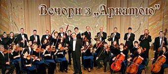
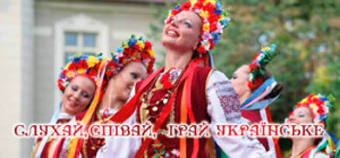

80 концертний сезон (2016/2017)
-
“Вечори з аркатою”
“Вечори з аркатою”
Наступні концерти циклу “ВЕЧОРИ З “АРКАТОЮ” не поступаються першому в оригінальності: на честь іншого ювіляра — В.А.Моцарта - 27 січня 2016 у співпраці із Академічним камерним хором “Вінниця” пролунає “Реквієм”.
Сміливим творчим експериментом стане виконання концерту А.Вівальді “Пори року” з електрогітарою (Соліст — Олег Кумпан, Вінниця) в програмі ‘ROCK-BAROCK’ (16 березня), а на традиційне святкування дня народження оркестру 31 травня 2016 аркатівці запросили колишніх випускників вінницьких мистецьких закладів освіти.
-
І80-й концертний сезон Вінницької обласної філармонії (2016-17 рр.)

І80-й концертний сезон Вінницької обласної філармонії (2016-17 рр.)
Цей концертний рік має бути особливо насиченим і цікавим, адже він — ювілейний. Його програму заповнюватимуть події з участю артистів Вінницької обласної філармонії та митців з інших областей нашої держави і закордонних митців. Тому радимо нашим постійним глядачам обов’язково придбати абонемент на концерти нового сезону.
До вашої уваги 6 абонементних циклів:
- Вечори з “Аркатою”,
- Steinway & Кº,
- Слухай, співай грай українське,
- Джаз в моєму місті,
- У фокусі — голос,
- Знай наших
Придбати абонементи можна, зателефонувавши за номерами: 66-13-50, 66-06-91, 093-027-75-70 та на сайті: www.afisha.vn.ua
-
Мистецькі проекти 79-го концертного сезону Вінницької обласної філармонії (2015-16 рр.)

Мистецькі проекти 79-го концертного сезону Вінницької обласної філармонії (2015-16 рр.)
Новий, 79-й, концертний сезон Вінницької філармонії обіцяє бути насиченим та яскравим, зберігаючи кращі із раніше реалізованих творчих ідей та активно експериментуючи із новими синтезованими жанрами, задовільняючи смаки поціновувачів як високого академічного музичного мистецтва, так і найсучасніших та найнесподіваніших форм музикування.
Урочисте відкриття відбудеться 25 вересня в рамках відзначення світовим музичним товариством 330-річчя від дня народження Й.С.Баха проектом“Й.С.Бах-330 — ексклюзиви: скрипкові концерти з електробандурою” за участю заслуженого артиста України К.Стеценка (скрипка, Київ) та Георгія Матвіїва (електробандура, Одеса).
-
Міжнародний день музики.
Міжнародний день музики.
Міжнародний день музики 01 жовтня святкуватимемо разом із Національною заслуженою капелою бандуристів України ім.Г.І.Майбороди. Цикл концертів “СЛУХАЙ, СПІВАЙ, ГРАЙ УКРАЇНСЬКЕ” продовжать Ансамбль народного танцю “Надзбручанка” (Тернопіль, 12 листопада), Академічний театр музики, пісні і танцю “Зоряни” (Кіровоград, 16 лютого) та оркестр Національного заслуженого академічного ансамблю танцю України ім.П.П.Вірського (11 березня).
-
‘STEINWAY & K°’.

‘STEINWAY & K°’.
Вечори фортепіанної музики у рамках циклу ‘STEINWAY & K°’ дарують Сергій Григоренко (Львів, 21 жовтня), Антоній Баришевський (Київ, 02 грудня), Інна Порошина (Київ, 10 лютого) та Юлія Воропаєва (Веймар, 06 квітня). Вінничани почують як сольні виступи піаністів, так і їх співпрацю із “Аркатою”.
-
“ШЛЯГЕРИ ТА СВІЖАК”.

“ШЛЯГЕРИ ТА СВІЖАК”.
Іще однією новинкою сезону стане цикл концертів наймолодшого колективу філармонії — Вокально-інструментального ансамблю “Експромт” — “ШЛЯГЕРИ ТА СВІЖАК”: “Не тільки про джаз” — композитор та співачка Оксана Славна (04 листопада), “Цимес-шоу” — до свята Хануки в рамках мистецького проекту “Вечори національної музики та кухні” (10 грудня), “Для вас, жінки” — до Міжнародного жіночого Дня — заслужений артист України Станіслав Городинський (03 березня), Beatles Tribute — до75-річчя Джона Леннона, за участю струнного квартету Академічного камерного оркестру “Арката” (20 квітня ).
А на справжніх меломанів чекають нові музичні сюрпризи протягом фестивалів: VINNYTSIA JAZZ FEST, “Музика в монастирських мурах”, Міжнародний фестиваль ім.П.І.Чайковського та Н.Ф.фон Мекк, Форум молодої музики “Барви музики ХХІ сторіччя. Авангард. Класика. Джаз”, Міжнародний дитячо-юнацький естрадний конкурс “Музична парасолька”. На найменших глядачів очікують ряд новинок в рамках Дитячого музичного лекторію, заходів новорічно-різдвяного циклу та проекту “У ритмі літа”.
Дбаючи про зручність обслуговування та заощаджуючи ваші кошти, пропонуємо можливість придбати як разові квитки, так і абонементи, в тому числі — пільгові. Діє гнучка система знижок та акцій для постійних глядачів. На останньому концерті кожного циклу серед власників абонементів буде розіграно цінні призи від наших меценатів.
Щиро дякуємо нашим спонсорам та інформаційним партнерам за допомогу у підготовці, проведенні та висвітленні наших мистецьких заходів.До зустрічі у концертній залі Вінницької обласної філармонії!